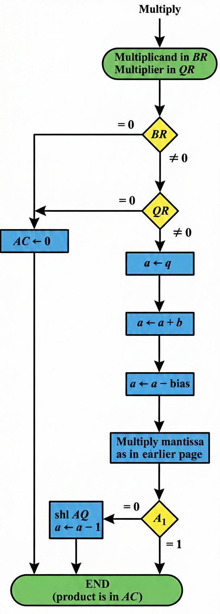

Understanding the Algorithm Behind Decimal Arithmetic
Floating-point multiplication is the process of multiplying two floating-point numbers by combining their mantissas and adding their exponents. Unlike fixed-point arithmetic, no conversion of exponents is needed since the multiplication of mantissas is performed similarly to fixed-point operations.
The result uses double-precision to maintain accuracy, and the range of single-precision mantissa combined with the exponent ensures adequate precision for the final product.
Verify if either operand is zero. If so, set the result to zero and terminate.
Add the exponents of both operands together to form the result's exponent.
Multiply the mantissas as in fixed-point arithmetic to produce the product.
Normalize the result to ensure proper floating-point format and precision.

The exponent of the multiplier is in q and the adder is between exponents a and b. Transfer exponents from q to a, add them, and transfer to a.
Bias Correction: Since both exponents are "biased," their sum will have double the bias, which must be subtracted.
Performed using fixed-point methods with the product residing in A and Q. Overflow cannot occur, so there's no need to check for it.
Note: Only the value in the AC is taken as the floating-point product (lower half of mantissa in Q not used).
The product may have an underflow. The most significant bit in A is checked. If it is 1, the result is already normalized.
If it is 0, the mantissa in AQ is shifted left and the exponent decremented. Only one normalization shift is necessary since the multiplier and multiplicand are normalized and contain fractions.
The smallest normalized operand is 0.1, so the smallest normalized product is 0.1 × 0.1 = 0.01. Therefore, only one shift may occur.
Only the upper half of the mantissa is retained for the final product, maintaining single-precision accuracy.
Floating-point multiplication is an elegant algorithm that combines exponent addition with mantissa multiplication. The key advantages include: